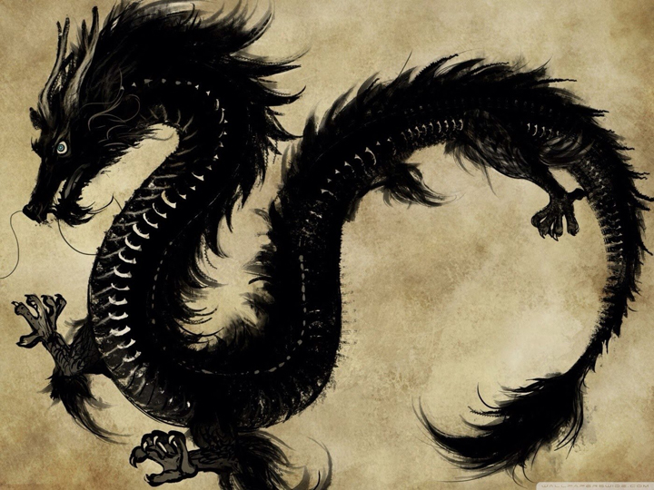

التنين هو كائن أسطوري ذو شكل اسطواني أو شبيه بالزواحف، وردت في الكثير من الثقافات والأساطير في جميع أنحاء العالم. له أجنحة وفي بعض الأساطير لا يملك أجنحة، ويقال في بعض الأساطير بأنه ينفث النار من فمه. وأكثر التنانين شهرة هو التنين الأوربي، المستمدة من مختلف التقاليد الشعبية الأوروبية، والتنين الشرقي، مثل التنين الصيني. توجد بعض الزواحف التي تسمى بالتنين مثل (تنين كومودو) وسمي بذلك لضخامته وطوله ولوجود الشبه بينه وبين التنانين الأسطورية، ويعتبر التنين من الوحوش التي الفت فيه الاساطير والتماثيل التي تكاد ان تصدق ويوجد في مناطق الجنوب الصيني من يؤمن بوجود التنانين في معتقداتهم الدينية لقد قيل في الأساطير القديمة ان التنين كان رمز القوة فهو كان يتمتع بقوة لا حدود لها، جلده صلب قادر على التحليق بسرعة زمجرته تثير الرعب، وقد كان يلقب أبطال الكونغ فو في الصين بالتنانين
يوصف التنين عادة في العصر الحديث بأن جسمه يشبه إلى حد بعيد سحلية ضخمة، أو ثعبانًا له زوجين من أرجل السحالي، وينفث النار من فمه. وللتنين الأوروبي أجنحة الخفافيش على ظهره. والمخلوق الشبيه بالتنين لكنه بدون أرجل أمامية يسمى (wyvern). وبعد اكتشاف كيف كانت التيروصورات (زاحف مجنح منقرض) تمشي على الأرض، صورت بعض التنانين بدون أرجل الأمامية مع وجود الاجنحة بدلا عنها. ومع أن التنانين ظهرت في العديد من الأساطير في أرجاء العالم، فقد تباينت القصص عن الوحوش التي جمعت تحت تسمية التنين. فقيل أن بعض التنين تنفث النار أو أنها سامة. وقد صورت عادة بأنها ذات شكل أفعواني أو بشكل الزواحف، وهي حيوانات بيوضة أي تتكاثر بالبيض، وهي ذات جسم مغطى بالحراشف أو الريش. كما تصور في بعض الأحيان أن لها عيونا كبيرة أو تراقب الكنز بعناية كبيرة، وهو أصل تسميتها دراغون بالإنكليزية أي "الرؤية بوضوح"[1]. بعض الأساطير تصورها مع صف من الزعانف الظهرية. ويكون التنين الأوروبي في أكثر الأحيان مجنحًا، في حين أن التنانين الشرقية تشبه الثعابين الكبيرة. ويمكن أن يكون للتنين عددًا متغيرًا من السيقان تتفاوت من العدم إلى الأربع أو أكثر من ذلك عندما يتعلق الأمر بالأدب الأوربي المبكر. ويكون للتنانين غالبا أهميتها روحية كبرى في مختلف الأديان والثقافات في أنحاء العالم. فالتنانين في العديد من الثقافات الآسيوية، وفي بعض الثقافات ماتزال تعتبره ممثلا للقوى الأساسية للطبيعة والدين والكون. كما تربطه مع الحكمة -وكثيرا ما يقال أنه أكثر حكمة من البشر-، وطول العمر. ويقال عنهم عادة بأنهم يمتلكون شكلا من أشكال القوة السحرية أو القوى الخارقة للطبيعة، وغالبا ما ترتبط بالآبار والأمطار والأنهار. وفي بعض الثقافات، تكون التنانين قادرة على الكلام مثل الإنسان.
الأساطير الأغريقية: يعود أول ذكر للتنين في الحضارة الأغريقية إلى الإلياذة، حيث وصف أجاممنون بأن له تنينا أزرقًا على حزام سيفه ورمز تنين ذا ثلاث رؤوس على الدرع الذي يلبسه على الصدر[2]. ودراغون تعني في اللغة الأغريقية "ذلك الذي يرى"، أو "ذلك الذي يومض" (ربما في إشارة إلى حراشفه العاكسة للضوء). وفي سنة 217 م، ناقش فيلوستراتوس (Philostratus) التنين في الهند في "حياة أبولونيوس من تيانا" (Apollonius of Tyana). في ترجمة مكتبة لوب الكلاسيكية ذكر بأن "كانت الأنياب، من جميع النواحي، أشبه بأنياب الخنازير الكبيرة، ولكنها أنحل وملتوية ومسننة مثل أسنان سمك القرش". الأساطير الأوربية: توجد التنانين في التراث الشعبي والأساطير الأوربية وهي متداخلة بين الثقافات في أوروبا. ومع أن للتنانين أجنحة، إلا أنها تكون عموما مختبئة في كهوف تحت الأرض، مما يجعلها كائنا قديما لعنصر الأرض. الأساطير الصينية: يمكن للتنانين الصينية والشرقية عموما أن تتخذ شكل الإنسان، وعادة ما تكون خيرة، في حين أن التنانين الأوروبية تكون عادة حاقدة وإن كان هناك بعض الاستثناءات (تنين ويلز الأحمر هو أحد تلك الاستثناءات). وتوجد بعض التنانين الشرقية الحاقدة كما في الأساطير الفارسية، والروسية مثلا. وللتنين شعبية خاصة في الصين، فالتنين ذو المخالب الخمسة كان رمزا لأباطرة الصين مع طائر العنقاء رمزا للامبراطورة الصينية. وأزياء التنين التي يرتديها ويحركها العديد من الناس هي أمر شائع في المهرجانات الصينية. الأساطير اليابانية:  تدمج أساطير التنانين اليابانية الأساطير المحلية مع القصص المستوردة من الصين، وكوريا والهند. ومثل التنانين الآسيوية الأخرى، فإن التنانين اليابانية هي آلهة المياه المرتبطة بهطول الأمطار والمسطحات المائية، وتوصف عادة بأنها مخلوقات أفعوانية كبيرة، بدون أجنحة، ذات أقدام بمخالب. وصفه بعض المؤلفين التنين الياباني أنه "يمتلك ثلاثة مخالب".